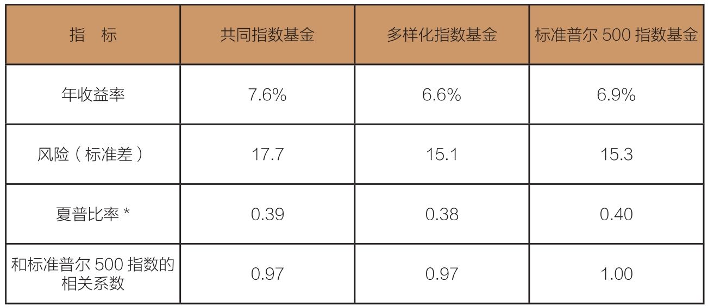

当“新浪潮”“革命”“全新典范”等诱人字眼背后隐藏着“高风险”“高成本”时，你还会选择“新型指数基金”吗？
找到某只基金业绩优秀的原因，比获得业绩优秀的数据更重要。为什么？
事实证明，自第一只指数共同基金于1975年诞生以来，为长期投资者设计的传统指数基金不仅在商业上取得了巨大成功，更让投资升华成为一项真正的艺术。
在前几章中，我们通过计算，清楚地证明了指数基金在创造长期收益方面取得的巨大成功。它为投资者创造的长期收益远远超过主动型共同基金所创造的收益。
有了技术的进步，它们在商业上实现的惊人业绩也就不足为奇了。尽管过了很长时间，但标准普尔500指数模型最初的原理经受住了考验。今天，传统指数基金中最大份额的资产集中于追踪广义美国股票市场（标准普尔500指数或整体股票市场指数）、广义国际股票市场，以及广义美国债券市场的传统指数基金。
这些传统指数基金的资产规模，已经从1976年的1 600万美元，增长到2017年的2万亿美元——相当于所有股票共同基金市值的20%。债券指数基金的资产价值也大幅增长，从1986年的1.32亿美元，增长到2017年的4 070亿美元——相当于所有应税债券基金市值的13%。2009年以来，传统指数基金的资产年均增长率高达18%，略高于他们的表亲ETF。
在许多方面，指数化已经成为一个竞争激烈的领域。大型传统指数基金经理每天都生活在惨烈的价格大战中，积极降低费率以吸引投资者，因为在这个领域，成本高低是决定投资成败的关键。
这种趋势对指数基金投资者来说很有利，但也让指数基金经理人的利润大打折扣，使得企业家不再试图开发新的基金产品，或是创建基金帝国(1)。指数基金的倡导者怎样才能充分发挥这些曾经给传统指数基金带来巨大成功的基本优势呢？答案就是创建新的指数和参与ETF盛宴！然后，他们宣称（或至少强烈暗示）：从今往后，他们使用的新指数策略将会持续超过广义市场指数，而广义市场指数几乎定义了人们如何考虑指数化。
ETF经理承诺较高的潜在收益，收取较高的费用，而不管这些潜在收益能否如实兑现。通过兜售获得超额收益的承诺，ETF的掌管者开始怂恿所有人，无论是投资者还是投机者。
我们思考一下，传统主动型基金经理人的操作方法和ETF经理人的操作方法。主动型基金经理人认为，打败市场组合的唯一途径就是远离市场组合。这也正是主动型基金经理殚精竭虑想做的。
但是就整体而言，他们不可能取得成功。因为他们的交易实际上只是把股票从一个投资者手里转移到另一个投资者手里。这些股票凭证来来去去，或许能让某个既定的买方或卖方从中受益，但最终只有这些金融经纪人会受益。
但是主动型基金经理可以从这个案例中获得巨大的经济利益：既然曾经成功过，他们就能在未来继续成功。反之，即使以前不够成功，那也只能说明，好日子正在前方等着他们。
然而，ETF的倡导者不会要求任何预期。相反，他们中的大多数人信赖这两个策略之一：
◆提供投资者可以实时便利交易的广义市场指数基金（这看起来像是似是而非的要求）。
◆针对狭窄的市场版块的宽范围创造指数，使投资者可以反复交易，赚取超额收益。（事实上，根本没有找到证据。）
发生了什么？投资管理和组合策略的责任，从主动型基金经理身上转移到了主动型基金投资者的身上。这项关键性转变向金融集市上的投资者发出了广泛暗示。我承认，我怀疑这项变化是否会使投资者生活得更好。
大部分的新型被动指数投资者会选择ETF结构，因为这是一个容易进入的市场。近年来，“聪明β”ETF（不管它究竟是什么意思）成为一个热门产品。
“聪明β”的经理设立他们自己的指数——事实上，不是传统意义上的指数，而是积极战略家声称的一种指数。他们借助所谓的因子，专注于加权组合——股票也由类似力量决定其收益。他们没有按股票市值进行加权，而是专注于一个单独因子（价值、交易量、规模等），或者把公司收入、现金流、利润和股利等几个因素结合起来，构成加权因子。例如，“聪明β”ETF组合按各上市公司发放的股利而不是市值确定其在投资组合中的权重。
作为一个概念，它既不是一个可怕的想法，也不是一个会改变世界的想法。“聪明β”ETF经理依靠计算机分析，挖掘一只股票的历史数据，识别出容易打包成ETF的因子。这样做的目的是把寻求业绩优势的投资者的资产集中起来，为经理人创造大额的收益。
我在密苏里时就看穿了这些策略。当然，它只是看起来容易，实际上并不容易。持续超越市场是很困难的，部分原因是均值回归的力量会影响共同基金收益。今天的制胜因子很可能会成为明天的失败因子。不认可均值回归的投资者极有可能会犯下大错。
伴随着ETF的一路崛起，回忆一下1965—1968年速利基金和1970—1973年“漂亮50”的疯狂；流行风潮驱动着基金业创设产品。这些产品有利于基金发起人，但几乎总是有害于基金持有人。我要提醒你的是忠于时间的原则：成功的短期市场策略很少——可以说从未优于长期投资策略。
不出你所料——ETF经理用来选择投资组合的基础因素，实际上都曾有过辉煌的表现，让传统的指数基金俯首称臣。（我们称为“数据挖掘”(2)，你尽可以放心，绝对不会有人鲁莽到胆敢去推行一种从未赢过传统指数基金的策略。）但在投资中，过去很少预言未来。
这些“聪明β”（晨星称之为“策略β”）ETF的资产暴涨——从2006年的1 000亿美元到当前超过7 500亿美元。2017年的前4个月里，它们在共同基金行业的现金流中显著地占据了27%的份额。
与此同时，两个主要的“策略β”因子——价值和成长——走出了“U”形轨迹。2016年，价值指数上涨16.9%，而成长指数得到了一个相对很小的6.2%。但到了2017年（截至4月），成长指数跃升了12.2%，而价值指数则艰难地收获了3.3%的增长。是的，它们两个都是短期评价因子策略。但或许没有什么可惊奇的，这看起来好像是均值回归再次发起了攻击。
在这个新生代，“聪明β”ETF指数专家都会大言不惭地宣扬自己的未卜先知。他们总是变相地告诉大家：他们就代表着指数投资的“新浪潮”，一场将为投资者带来更多收益和更低风险的“革命”，一种“全新的投资典范”。
实际上，相信基于因子指数的产品的人正在把自己描绘成哥白尼，那个曾经告诉我们太阳系的中心是太阳而不是地球的伟人。他们甚至把那些传统市值加权型指数的管理者比作固守托勒密地球中心论的古代天文学家。他们信誓旦旦地宣称：我们生活在一个指数化处于范式转换（paradigm shift）边缘的时代。过去10年里，“聪明β”代表一次小型的范式转换。但连其最早的提倡者、所谓的“聪明β之父”最近也认为，“聪明β”将会以“近似理性”的方式崩溃。（我保持怀疑。）
在过去10年里，起初的基本指数基金和第一只利息加权指数基金都有机会证明各自理论的价值。然而它们证明了什么？实质上什么都没有。表16-1提供了对比。
表16-1 “聪明β”收益：10年期结束，2016年12月31日

*一种风险调整方法。
你会注意到，如果风险高过标准普尔500基金，基本指数基金就会获得更高收益。而利息加权指数基金获得收益较低，且风险较低。但当我们计算风险调整后的夏普比率（Sharp ratio）时，标准普尔500指数基金会超过二者。
三只基金的收益和风险具有相似性，这没有什么令人惊奇的。每一只都是持有相似股票的多样化组合——只是分配了不同的权重罢了。事实上，“聪明β”ETF的收益和标准普尔500指数基金的收益相关系数高达0.97，因此，这两种基金大可被划分为高定价的“封闭式指数基金”。
标准普尔500指数组合提供的是一种确定性，它的投资者将会赚取接近股票市场指数的总体收益。这两只“聪明β”ETF亦是如此，只是我们不知道。你应该问自己一个问题：“在类似组合里，我更喜欢确定的收益，还是不确定的？安全是不是比后悔要好一些？”只有你知道答案。
如果一位执掌股票基金的主动型基金经理声称，有办法在高度（但不完美）有效的美国股票市场中挖掘额外的价值，投资者应该查阅其过往记录，思考其所用策略，然后再决定是否投资。许多“聪明β”ETF经理实际上是主动型基金经理。但他们不会对外发表预期，除非这个预期能给他们带来信心，使他们相信某部分确定的市场（如分红股票）在可见的未来会战胜广义指数。但那种论述违反了理性以及历史经验。
通过以整个市场为投资标的的传统市值加权型指数基金（如标准普尔500指数），你就可以坐享股市收益中属于你的那份蛋糕。事实上，它完全可以保证你在长期将市场上90%的投资者抛在身后。也许不同于我见过的其他新范例，这种以基础指数化为核心的新范例将成为超越市场的明星。
我奉劝投资者，如果有哪种范例声称自己能比传统指数基金创造出更多的财富，那绝对是妖言惑众，你千万不要为之所动。所以说，一定要牢记19世纪初的军事家、著名的普鲁士将军卡尔·冯·克劳塞维茨（Carl von Clausewitz）的话：“一个好计划的最大敌人就是过分追求完美的计划。”把你的梦想放在一边，运用你的常识，坚持以传统指数基金为主导的好计划。
尽管我很固执，但是在这个问题上，我绝不孤独。我们先听听哈佛大学著名经济学教授、总统办公室前经济顾问格里高利·曼昆（Gregory Mankiw）如何说：“在这一点上，我肯定会把赌注压在博格身上。”
还有斯坦福大学经济学教授、诺贝尔经济学奖获得者威廉·夏普（William Sharp）：“人们居然认为一种依据市值之外的标准去权衡股票的方案可以主宰按市值加权的指数，这绝对令人难以置信……新的范式就如同匆匆过客，转瞬即逝。和市场打赌（更重要的是还要花掉大把钞票），绝对是一次危险之旅。”
新英格兰养老金顾问公司（New England Pension Consultants）的研究总监约翰·米纳汉（John Minahan）对此也忧心忡忡：“很多基金经理的豪言壮语让我感到震惊：‘在长期内，XX将无往而不胜。’谈起股利收益、收益增长、高质量的管理、定量因素以及诸多利好因素的汇集，他们总是乐此不疲——但是对XX何以被市场系统性地低估却只字不提。这些基金也许可以找到和以往成功有关的数据，但无法解释XX如何做到出类拔萃。这样的数据并不能让我相信XX在未来依然能略胜一筹。”
(1)先锋基金按成本法则运营，在很大程度上依赖规模经济，而不是价格竞争，来降低向指数基金持有人收取的费用。
(2)data mining，意为在庞大的数据中寻找出有价值的隐藏事件。